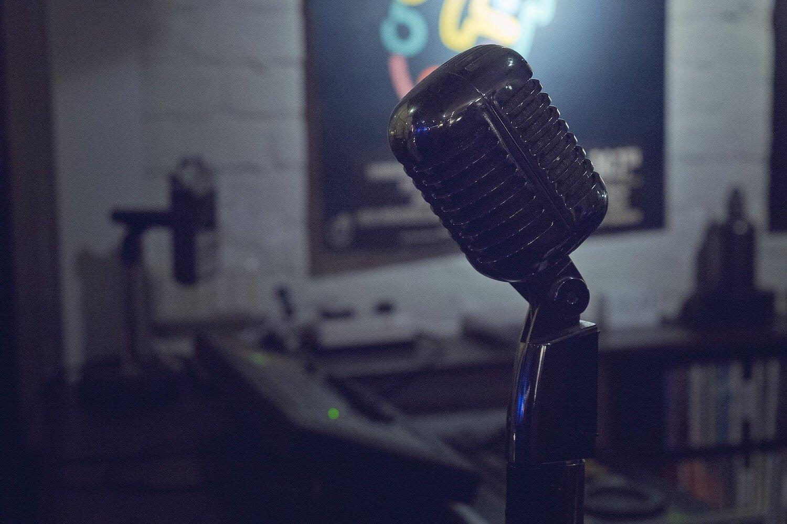
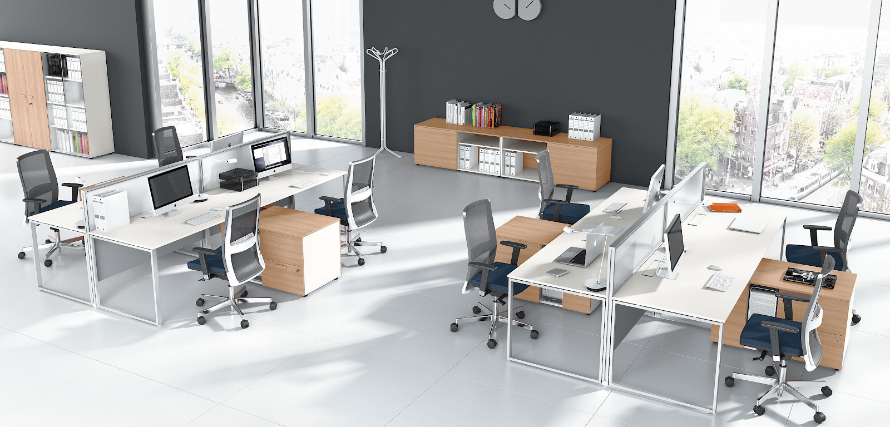
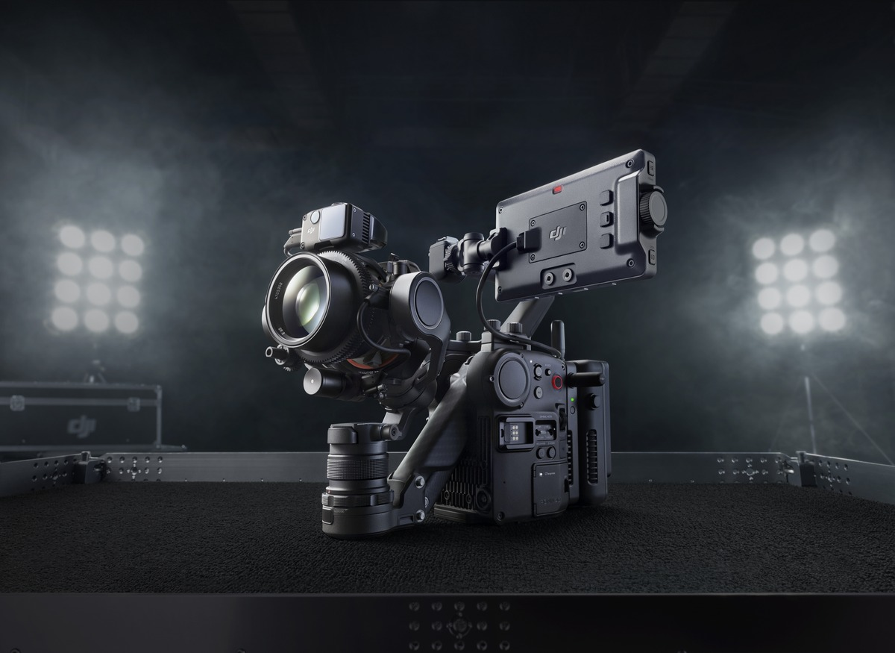
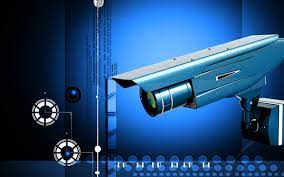

Возможности
Видеонаблюдение через интернет
Для онлайн доступа к камерам достаточно иметь доступ к Интернету на объекте. Подключившись удаленно к системе видеонаблюдения можно просматривать видео и запись в режиме времени.

Запись звука
Наличие микрофона поможет проанализировать качество обслуживания персонала, прослушать разговоры няни и репетиторов с детьми, детально разобраться в случае возникновения конфликта.

Детектор движения
Видеокамеры способны определять движение объектов. Это важно, когда нужно настроить запись только при обнаружении движения или обозначить границы, при пересечении которых система оповестит об этом.
Просмотр архивных видеозаписей
Видео с каждой камеры записывается отдельно. Зная приблизительно, когда и где произошло интересующее Вас событие, без труда можно найти важный фрагмент и сохранить его на жесткий диск компьютера или на флеш-карту.

Запись видео в полной темноте
При снижении освещенности в помещении или на улице видеокамеры переходят в ночной режим съемки. Даже при съемке в темноте качество видео остается на очень высоком уровне.

Видеоконтроль и защита от краж
Никакая охрана не обеспечит круглосуточный контроль витрин, складов, зон погрузки/разгрузки транспорта. Но система видеонаблюдения, если не заменит, то станет хорошим инструментом для службы безопасности.